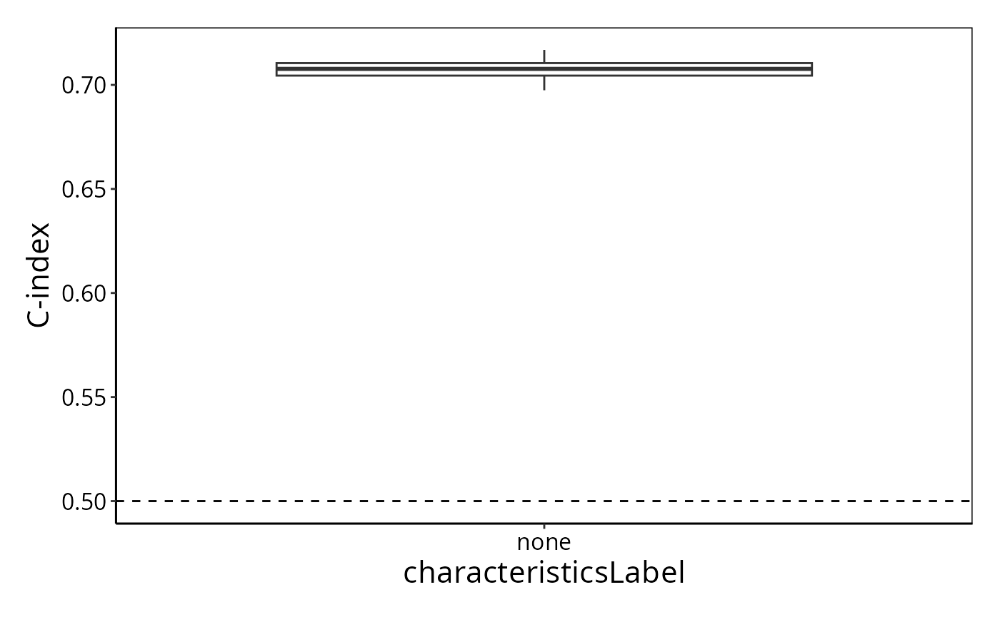
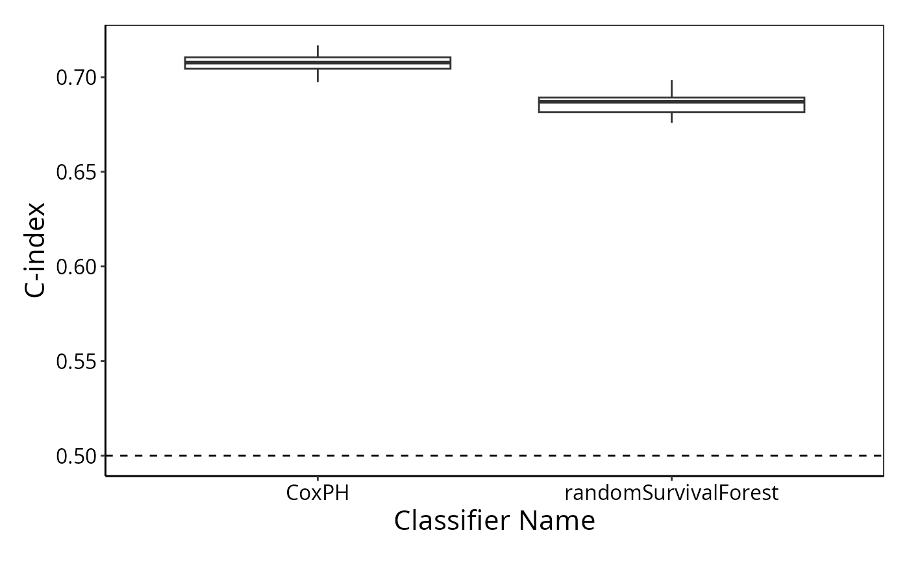

Survival Data Analysis
Dario Strbenac
The University of Sydney, Australia.
survival.RmdThe modelling of survival data may be done using ClassifyR, not only categorical data. Currently, feature selection based on Cox proportional hazards ranking and models built on Cox proportional hazards or random survival forests are available.
To illustrate, clinical variables of the METABRIC breast cancer cohort will be used to predict risk scores for patients.
## DataFrame with 6 rows and 8 columns
## Breast.Tumour.Laterality ER.Status Inferred.Menopausal.State
## <factor> <factor> <factor>
## MB-0002 r pos pre
## MB-0005 r pos pre
## MB-0010 l pos post
## MB-0013 l pos post
## MB-0014 r pos post
## MB-0018 l neg post
## Lymph.Nodes.Positive Grade Size timeRFS eventRFS
## <integer> <integer> <numeric> <integer> <integer>
## MB-0002 0 3 10 2539 0
## MB-0005 1 2 15 4599 1
## MB-0010 0 3 31 88 1
## MB-0013 2 2 17 3378 0
## MB-0014 1 2 10 4930 0
## MB-0018 0 3 22 3422 0Cross-validation is very similar to the classification scenario,
except that a Surv object or two column names indicating
the time and event (in that order) are to be specified.
survCrossValidated <- crossValidate(clinical, c("timeRFS", "eventRFS"))
survCrossValidated## An object of class 'ClassifyResult'.
## Characteristics:
## characteristic value
## Classifier Name CoxPH
## Selection Name CoxPH
## multiViewMethod none
## characteristicsLabel none
## Cross-validation 20 Permutations, 5 Folds
## Features: List of length 100 of feature identifiers.
## Predictions: A data frame of 9400 rows.
## Performance Measures: None calculated yet.By default, Cox proportional hazards has been used for feature selection as well as modelling.
The distribution of C-index values can be plotted.
performancePlot(survCrossValidated)## Warning in .local(results, ...): C-index not found in all elements of results.
## Calculating it now.
The typical C-index is about 0.65, often seen in genomics analysis.
Now, do no explicit feature selection and use a random survival forest. This will take substantially longer than Cox proportional hazards because parameter tuning of the fraction of variables to consider at each split and the number of trees to build are optimised over a grid of default values (see Parameter Tuning Presets article for details).
survForestCrossValidated <- crossValidate(clinical, c("timeRFS", "eventRFS"),
selectionMethod = "none",
classifier = "randomSurvivalForest",
nCores = 20)
resultsList <- list(survCrossValidated, survForestCrossValidated)
performancePlot(resultsList)## Warning in .local(results, ...): C-index not found in all elements of results.
## Calculating it now.
The random survival forest performs better than random chance but not better than Cox proportional hazards.
Exercise: Plot the per-sample C-index using
samplesMetricMap(resultsList) to identify patients who are
predicted well and those who are not.
Finally, note that extreme gradient boosting can also fit survival
models. classifier = "XGB" will fit such a model. Remember
that classifier can also be a vector of strings, so all
three models can be fitted in one command.